江科大自化协（stm32）
STM32F103RCT6产品参数
| 产品型号 | 内核 | 主频（MHz） | Flash (Kbytes) | |
|---|---|---|---|---|
| STM32F103RCT6 | Cortex-M3 | 72 | 256 | |
| RAM（Kbytes） | E2PROM（Bytes） | 封装 | IO | |
| 48 | 0 | LQFP64 | 51 | |
| 工作电压 | 16位定时器 | 32位定时器 | 电机控制定时器 (16-bit) | |
| 2-3.6 | 8 | 0 | 2 | |
| 低功耗定时器 | 高分辨率定时器 | 12位ADC转换单元 | 12位ADC通道 | |
| 0 | 0 | 3 | 16 | |
| 14位ADC转换单元 | 14位ADC通道 | 16位ADC转换单元 | 16位ADC通道 | |
| 0 | 0 | 0 | 0 | |
| 12位DAC通道 | 比较器 | 放大器 | SPI | |
| 2 | 0 | 0 | 3 | |
| I2S | M-SPI | I2C | U(S)ART | |
| 2 | 0 | 2 | 5 | |
| 低功耗UART | CAN | SDIO | F（S）MC | |
| 0 | 1 | 1 | 0 | |
| USB Device | USB FS HOST/OTG | USB HS OTG | Ethernet | |
| 1 | 0 | 0 | 0 | |
| MDIO | Segment LCD | JPEG Codec | GPU | |
| 0 | 0 | N/A | N/A | |
| 3D GPU | TFT LCD | MIPI_DSI | SAI | |
| N/A | 0 | 0 | 0 | |
| SPDIFRX | DFSDM | DCMI | SWPMI | |
| 0 | 0 | 0 | 0 | |
| Math Accelerator | RF | Trust’Zone | TRNG | |
| N/A | N/A | N/A | N/A | |
| OTFDEC | PKA | AES/DES | SHA/HMAC | |
| N/A | N/A | N/A | N/A | |
| T° Max(℃) | URL | content | ||
| 85 | https://www.st.com/en/product/STM32F103RC |
STM32F103RCT6引脚定义 


输入输出形式：GPIO的八种工作模式
| 模式名称 | 性质 | 特征 |
|---|---|---|
| IN_FLOATING浮空输入 | 数字输入 | 可读取引脚电平，若引脚悬空，则电平不确定 |
| IPU上拉输入 | 数字输入 | 可读取引脚电平，内部连接上拉电阻，悬空时默认高电平 |
| IPD下拉输入 | 数字输入 | 可读取引脚电平，内部连接下拉电阻，悬空时默认低电平 |
| AIN模拟输入 | 模拟输入 | GPIO无效，引脚直接接入内部ADC |
| Out_OD开漏输出 | 数字输出 | 可输出引脚电平，高电平为高阻态，低电平接VSS |
| Out_PP推挽输出 | 数字输出 | 可输出引脚电平，高电平接VDD，低电平接VSS |
| AF_OD复用开漏输出 | 数字输出 | 由片上外设控制，高电平为高阻态，低电平接VSS |
| AF_PP复用推挽输出 | 数字输出 | 由片上外设控制，高电平接VDD，低电平接VSS |
推挽输出Out_PP与开漏输出Out_OD:
推挽输出高低电平均有驱动能力.
开漏输出高电平相当于高阻态，没有驱动能力，低电平有驱动能力.
（一般输出用推挽就行，特殊采用开漏）
VCC,VDD,VSS:
电压的作用对象不同：VCC的供电电压作用于电路。VDD的工作电压作用于芯片。VSS的电压作用于器件内部。
来源不同：VDD来源于漏极电源电压，用于 MOS 晶体管电路, 一般指正电源。 Vss来源于极电源电压，在 CMOS 电路中指负电源, 在单电源时指零伏或接地。
GPIO以及AFIO各个函数：
void GPIO_DeInit(GPIO_TypeDef* GPIOx);//对GPIOX进行复位
void GPIO_AFIODeInit(void);//AFIO外设复位，清除其配置
void GPIO_Init(GPIO_TypeDef* GPIOx, GPIO_InitTypeDef* GPIO_InitStruct);//IO引脚的初始化函数
void GPIO_StructInit(GPIO_InitTypeDef* GPIO_InitStruct);
//GPIO的四个读取函数
uint8_t GPIO_ReadInputDataBit(GPIO_TypeDef* GPIOx, uint16_t GPIO_Pin);//读取输入数据寄存器某一个端口的输入值
uint16_t GPIO_ReadInputData(GPIO_TypeDef* GPIOx);//读取整个输入数据寄存器的，返回值16位，每一位代表一个端口值
uint8_t GPIO_ReadOutputDataBit(GPIO_TypeDef* GPIOx, uint16_t GPIO_Pin);//读取输出数据寄存器的某一个位（一般用于输出模式，看一下自己输出了什么）
uint16_t GPIO_ReadOutputData(GPIO_TypeDef* GPIOx);//读取整个输出寄存器
//GPIO的四个读取函数
void GPIO_SetBits(GPIO_TypeDef* GPIOx, uint16_t GPIO_Pin);//把指定的端口设置为高电平
void GPIO_ResetBits(GPIO_TypeDef* GPIOx, uint16_t GPIO_Pin);//把指定的端口设置为低电平
void GPIO_WriteBit(GPIO_TypeDef* GPIOx, uint16_t GPIO_Pin, BitAction BitVal);//前两个参数指定端口，根据第三个参数的值设定指定端口，Bit_RESET清除端口引脚，置低电平，Bit_SET设置端口引脚，置高电平
void GPIO_Write(GPIO_TypeDef* GPIOx, uint16_t PortVal);//“portval”可以同时对16个端口进行写入操作
void GPIO_PinLockConfig(GPIO_TypeDef* GPIOx, uint16_t GPIO_Pin);//锁定GPIO某个引脚的（用的不多）
void GPIO_EventOutputConfig(uint8_t GPIO_PortSource, uint8_t GPIO_PinSource);//配置AFIO的事件输出功能（用的不多）
void GPIO_EventOutputCmd(FunctionalState NewState);//配置AFIO的事件输出功能（用的不多）
void GPIO_PinRemapConfig(uint32_t GPIO_Remap, FunctionalState NewState);//可以用来引脚重映射（重映射的方式，新的状态）
void GPIO_EXTILineConfig(uint8_t GPIO_PortSource, uint8_t GPIO_PinSource);//配置AFIO的数据选择器，选择我们想要的中断引脚
void GPIO_ETH_MediaInterfaceConfig(uint32_t GPIO_ETH_MediaInterface);//与以太网有关，暂时用不到stm新建工程启动文件后缀意义
（stm32F103RCT6的容量是256kb）
| 缩写 | 释义 | Flash****容量 | 型号 |
|---|---|---|---|
| LD_VL | 小容量产品超值系列 | 16~32K | STM32F100 |
| MD_VL | 中容量产品超值系列 | 64~128K | STM32F100 |
| HD_VL | 大容量产品超值系列 | 256~512K | STM32F100 |
| LD | 小容量产品 | 16~32K | STM32F101/102/103 |
| MD | 中容量产品 | 64~128K | STM32F101/102/103 |
| HD | 大容量产品 | 256~512K | STM32F101/102/103 |
| XL | 加大容量产品 | 大于512K | STM32F101/102/103 |
| CL | 互联型产品 | - | STM32F105/107 |
LED,蜂鸣器，按键电路图示
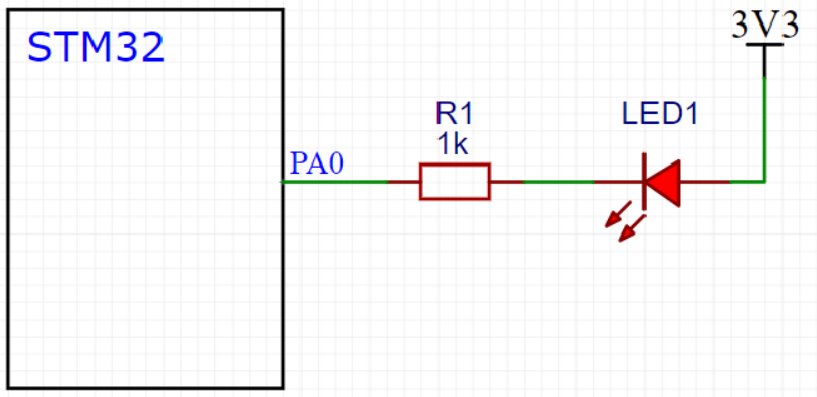
)STM32低电平点亮LED灯。低电平强驱动
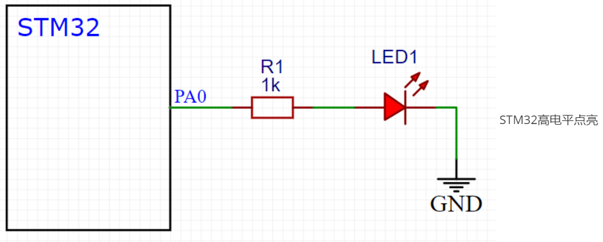
) STM32高电平点亮LED灯。高电平弱驱动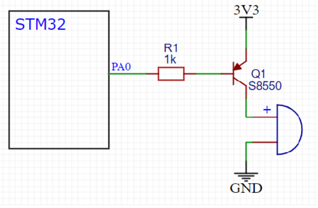
)PNP三极管驱动电路（左边是基极，带箭头的是发射极，剩下的是集电极）（左边基极给低电平，三极管就会导通，通过3.3v和GND，就可以给蜂鸣器提供驱动电流，反之基极给高电平，截止，没有电流）(PNP三极管最好接上边，这是因为三极管的通断是需要在发射极和基极直接产生一定的开启电压 )
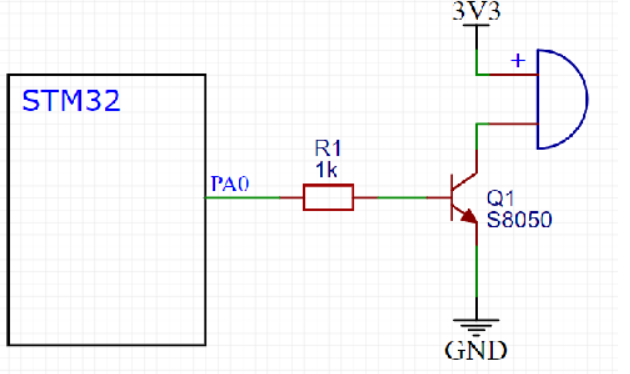
)NPN三极管驱动电路（左边是基极，带箭头的是发射极，剩下的是集电极）（基极给高电平导通，低电平断开）（NPN三极管最好接下边， 这是因为三极管的通断是需要在发射极和基极直接产生一定的开启电压 ）
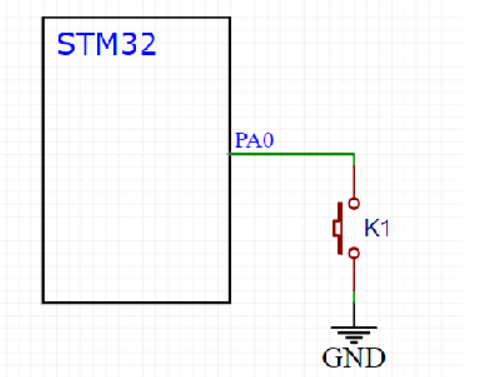
)按键图示（PA0内部必须是上拉输入模式，则此时按键松开引脚悬空输入的是高电平，按下按键连接GND以致PA是低电平）
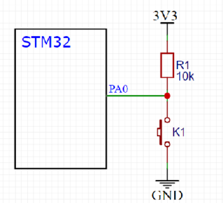
)按键图示（已经存在上拉电阻，PA0可以是上拉输入（内外上拉电阻共同作用）也可以是浮空输入）按下为低电平，松开为高电平
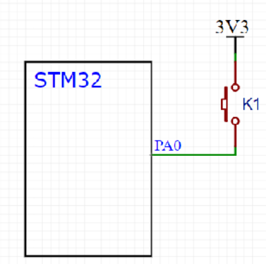
)（拓展，不常用）按键图示（下拉输入，不可浮空输入）按下是高电平，松开是低电平
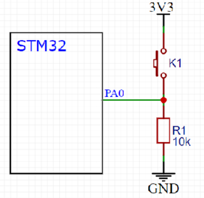
) （拓展，不常用）按键图示（下拉输入或者浮空输入）按下是高电平，松开是低电平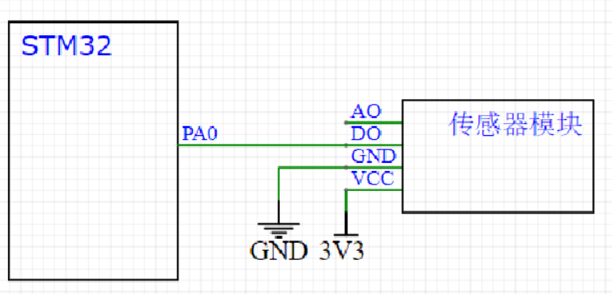
)传感器模块电路图示：DO数字输出，AO模拟输出
OLED文件提供：
引脚配置与引脚初始化需要按照实际板子样式配置，其余不需要更改。
OLED显示屏总共4行16列（1行一列开头，无0行0列）
| 函数 | 作用 |
|---|---|
| OLED_Init(); | 初始化 |
| OLED_Clear(); | 清屏 |
| OLED_ShowChar(1, 1, ‘A’); | 显示一个字符 |
| OLED_ShowString(1, 3, “HelloWorld!”); | 显示字符串 |
| OLED_ShowNum(2, 1, 12345, 5); | 显示十进制数字 |
| OLED_ShowSignedNum(2, 7, -66, 2); | 显示有符号十进制数字 |
| OLED_ShowHexNum(3, 1, 0xAA55, 4); | 显示十六进制数字 |
| OLED_ShowBinNum(4, 1, 0xAA55, 16); | 显示二进制数字 |
（上表第四个数字为长度）（C语言不能直接写二进制的数）
C语言知识拓展
C语言数字类型
（“int”数据在51单片机中占16位，在STM32中占32位）（32想表示16位的数据得用“short”）(stdint.h头文件与ST库函数对这些变量的重命名)
| 关键字 | 位数 | 表示范围 | stdint****关键字 | ST****关键字 |
|---|---|---|---|---|
| char | 8 | -128 ~ 127 | int8_t | s8 |
| unsigned char | 8 | 0 ~ 255 | uint8_t | u8 |
| short | 16 | -32768 ~ 32767 | int16_t | s16 |
| unsigned short | 16 | 0 ~ 65535 | uint16_t | u16 |
| int | 32 | -2147483648 ~ 2147483647 | int32_t | s32 |
| unsigned int | 32 | 0 ~ 4294967295 | uint32_t | u32 |
| long | 32 | -2147483648 ~ 2147483647 | ||
| unsigned long | 32 | 0 ~ 4294967295 | ||
| long long | 64 | -(2^64)/2 ~ (2^64)/2-1 | int64_t | |
| unsigned long long | 64 | 0 ~ (2^64)-1 | uint64_t | |
| float | 32 | -3.4e38 ~ 3.4e38 | ||
| double | 64 | -1.7e308 ~ 1.7e308 |
extern （外部变量，跨越工程下的不同文件）
typedef,define,结构体，枚举
结构体eg:
StructName.z = 1.23;//结构体变量名.结构体成员名
pStructName->z = 1.23;//结构体指针名->结构体成员名
枚举：关键字：enum 用途：定义一个取值受限制的整型变量，用于限制变量取值范围；宏定义的集合 定义枚举变量：enum{FALSE = 0, TRUE = 1} EnumName; 因为枚举变量类型较长，所以通常用typedef更改变量类型名 引用枚举成员： EnumName = FALSE; EnumName = TRUE;
enum{MONDAY=0,TUSDAY,WEDNESDAY}week;//后面的值可不赋，系统自动按顺序赋值0，1，2，3，4~~~
STM32中断
68个可屏蔽中断通道，包含EXTI（外部中断）、TIM（定时中断）、ADC（模数转换器）、USART（串口）、SPI（通信）、I2C（通信）、RTC（实时时钟）等多个外设
使用NVIC统一管理中断，每个中断通道都拥有16个可编程的优先等级，可对优先级进行分组，进一步设置抢占优先级和响应优先级（NVIC是用来管理中断，分配16个优先级的）
中断函数模块示例
#include "stm32f10x.h" // Device header
uint16_t CountSensor_Count;//全局变量默认是0（用于记录中断的次数）
void CountSensor_Init(void)//配置外部中断
{
//第一步：把涉及的外设时钟都打开->配置RCC（不打开时钟，外设是没法工作的）
//第二步：配置GPIO,选择我们的端口为输入模式
//第三步：配置AFIO,选择我们用的这一路的GPIO，连接到后面的EXTI
//第四步：配置EXTI,选择边缘触发方式（上升沿，下降沿，双边沿），选择触发响应方式（中断响应，事件响应）
//第五步：配置NVIC，给这个中断选择一个合适的优先级->通过NVIC，外部中断信号就能进入CPU了，CPU才能跳转到中断函数执行中断程序
//第一步：
RCC_APB2PeriphClockCmd(RCC_APB2Periph_GPIOB,ENABLE);//开启外部时钟GPIOB(GPIOB是APB2的外设)
RCC_APB2PeriphClockCmd(RCC_APB2Periph_AFIO,ENABLE);//开启AFIO时钟（AFIO也是APB2的外设）
//EXTI与NVIC的外设是一直打开着的，不需要我们再开启（NVIC是内核外设，不需要开启时钟，和CPU一起住皇宫里的）
//第二步：
GPIO_InitTypeDef GPIO_InitStructure;
GPIO_InitStructure.GPIO_Mode=GPIO_Mode_IPU;//上拉输入，默认为高电平的输入方式(对于外部中断来说，要选择浮空输入，上拉输入或者下拉输入。)
GPIO_InitStructure.GPIO_Pin=GPIO_Pin_14;//PB14号口
GPIO_InitStructure.GPIO_Speed=GPIO_Speed_50MHz;//速度
GPIO_Init(GPIOB,&GPIO_InitStructure);//初始化GPIOB外设
//第三步
//AFIO外设没有专门的库函数文件，他的库函数是与GPIO一起的
GPIO_EXTILineConfig(GPIO_PortSourceGPIOB,GPIO_PinSource14);//连接PB14号口的第14个中断线路
//AFIO外部的中断引脚选择配置完成，执行完上面这个函数后，AFIO的第14个数据选择器就拨好了，其中输入端被拨到了GPIOB,对应的就是PB14号引脚，输出端固定连接的是EXTI的第14个中断线路
//如此，PB14号引脚的电平信号就可以顺利通过AFIO，进入到后级EXTI电路了
//第四步：将EXTI的第14号线路配置为中断模式，下降沿触发，开启中断
EXTI_InitTypeDef EXTI_InitStructure;//定义结构体
EXTI_InitStructure.EXTI_Line=EXTI_Line14 ;//指定我们要配置的中断线->PB14所在的第十四号线路
EXTI_InitStructure.EXTI_LineCmd=ENABLE;//指定选择的中断线的新状态（开启中断或关闭中断）
EXTI_InitStructure.EXTI_Mode=EXTI_Mode_Interrupt;//指定外部中断线的模式（中断模式，事件模式）
EXTI_InitStructure.EXTI_Trigger= EXTI_Trigger_Falling ;//指定触发信号的有效边沿（上升沿，下降沿，双边沿）
EXTI_Init(&EXTI_InitStructure);//外部中断初始化
//如此，PB14的电平信号就能通过EXTI进入下一级NVIC了
//第五步
NVIC_PriorityGroupConfig( NVIC_PriorityGroup_2);//中断分组方式->抢占2，响应2
NVIC_InitTypeDef NVIC_InitStructure;//定义结构体
NVIC_InitStructure.NVIC_IRQChannel=EXTI15_10_IRQn;//指定中断通道来开启或者关闭
NVIC_InitStructure.NVIC_IRQChannelCmd=ENABLE;//中断通道是使能还是失能
NVIC_InitStructure.NVIC_IRQChannelPreemptionPriority=1;//指定所选通道的抢占优先级
NVIC_InitStructure.NVIC_IRQChannelSubPriority=1;//指定所选通道的响应优先级
NVIC_Init(&NVIC_InitStructure);
//外部中断的信号从GPIO到AFIO再到EXTI再到NVIC最后通向CPU,让CPU从主程序跳转到中断程序执行
//STM32中，中断函数的名字都是固定的，每个中断通道对应一个中断函数（去启动文件找中断函数的名字）
}
void EXTI15_10_IRQHandler(void)//中断函数的格式（启动文件中找中断函数的固定名字）（中断函数都是无参无返回值的）(中断函数无需在.h文件中声明)
{
if(EXTI_GetITStatus(EXTI_Line14)==SET)//先进行一个中断标志位的判断（因为这个函数EXTI10到EXTI15都能进来，需要判断是不是EXTI14进来）
{
CountSensor_Count++;//用于记录中断的次数
EXTI_ClearITPendingBit(EXTI_Line14);//中断函数结束后，调用一下清除中断标志位的函数（只要中断标志位置1，就会跳转到中断函数）
}
}
uint16_t CountSensor_Count_Get(void)//返回记录中断的变量值CountSensor_Count
{
return CountSensor_Count;
}NVIC基本结构
（NVIC是一个内核外设，是CPU的小助手）
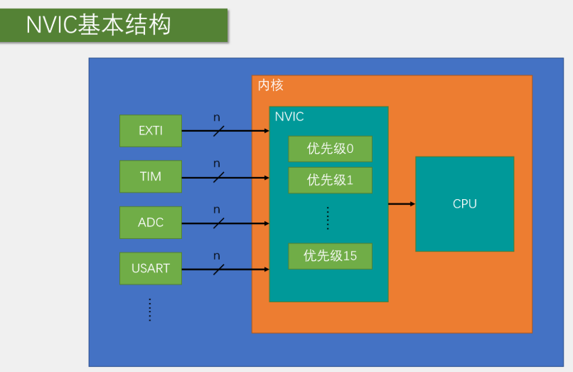
)NVIC优先级分组
NVIC的中断优先级由优先级寄存器的4位（0~15）决定，这4位可以进行切分，分为高n位的抢占优先级和低4-n位的响应优先级 抢占优先级高的可以中断嵌套，响应优先级高的可以优先排队，抢占优先级和响应优先级均相同的按中断号排队
| 分组方式 | 抢占优先级 | 响应优先级 |
|---|---|---|
| 分组0 | 0位，取值为0 | 4位，取值为0~15 |
| 分组1 | 1位，取值为0~1 | 3位，取值为0~7 |
| 分组2 | 2位，取值为0~3 | 2位，取值为0~3 |
| 分组3 | 3位，取值为0~7 | 1位，取值为0~1 |
| 分组4 | 4位，取值为0~15 | 0位，取值为0 |
NVIC函数
（在中断配置之前，先指定一下中断的分组，再初始化NVIC）（分组的方式整个芯片只能用一种，分组的代码整个工程只需要执行一次）（如果把它放在模块里进行分组，要保证每个模块分组都选的是同一个，或者把这个代码放在主函数的最开始，这样模块里就不用再进行分组了）
void NVIC_PriorityGroupConfig(uint32_t NVIC_PriorityGroup);//用于中断分组（参数是中断分组的方式）
void NVIC_Init(NVIC_InitTypeDef* NVIC_InitStruct);//根据结构体里面指定的参数初始化NVIC
void NVIC_SetVectorTable(uint32_t NVIC_VectTab, uint32_t Offset);//设置中断向量表（用的不多）
void NVIC_SystemLPConfig(uint8_t LowPowerMode, FunctionalState NewState);//系统低功耗配置（用的不多）
void SysTick_CLKSourceConfig(uint32_t SysTick_CLKSource);中断详情
灰色部分：内核的中断（比较高深，一般用不到）
白色部分：STM32外设的中断
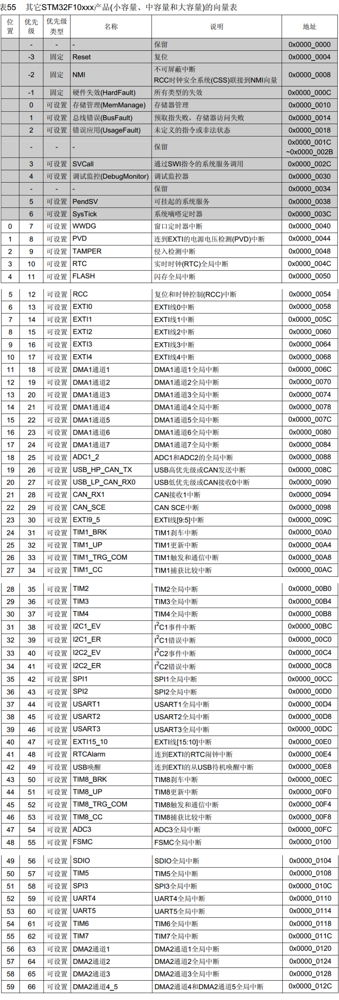
)WWDG(窗口定时器中断：窗口看门狗)
EXTI外部中断
EXTI（Extern Interrupt）外部中断 EXTI可以监测指定GPIO口的电平信号，当其指定的GPIO口产生电平变化时，EXTI将立即向NVIC发出中断申请，经过NVIC裁决后即可中断CPU主程序，使CPU执行EXTI对应的中断程序 支持的触发方式：上升沿/下降沿/双边沿/软件触发（引脚啥事没有，程序里一句代码就能执行中断） 支持的GPIO口：所有GPIO口，但相同的Pin不能同时触发中断（eg.PA0与PB0不能同时用）（后面四个其实是来外部中断蹭网的，因为外部中断能从低功耗模式的停止模式下唤醒STM32） 通道数：16个GPIO_Pin，外加PVD输出、RTC闹钟、USB唤醒、以太网唤醒（总共20个中断线路） 触发响应方式：中断响应（申请中断，让CPU执行中断）/事件响应（当外部中断检测到引脚电平变化时，选择触发事件，外部中断的信号就不会通向CPU了而是通向·触发其他外设(属于外设之间的联合操作)）
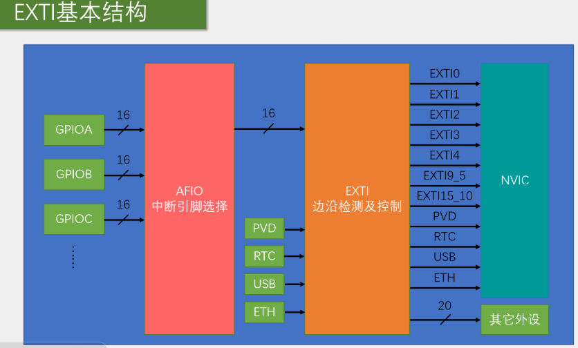
)EXTI框图
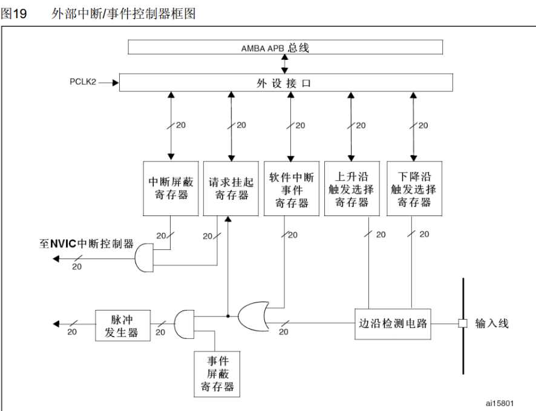
)EXTI函数
void EXTI_DeInit(void);//把EXTI的配置都清除，恢复成上电默认的状态
void EXTI_Init(EXTI_InitTypeDef* EXTI_InitStruct);//初始化EXTI,根据这个结构体里的参数配置EXTI外设
void EXTI_StructInit(EXTI_InitTypeDef* EXTI_InitStruct);//可以把参数传递的结构体变量赋一个默认值
void EXTI_GenerateSWInterrupt(uint32_t EXTI_Line);//用来软件触发外部中断（参数给一个指定的中断线，就能软件触发一次这个外部中断）（如果只需要外部引脚触发中断，就不需要这个函数了）
//在主程序里查看和清除标志位（对状态寄存器的读写）（一般的读写标志位，能不能触发中断的标志位都能读取）
FlagStatus EXTI_GetFlagStatus(uint32_t EXTI_Line);//可以获取指定的标志位是否被置1了
void EXTI_ClearFlag(uint32_t EXTI_Line);//可以对置1的标志位进行清除
//在中断函数里查看和清除标志位（对状态寄存器的读写）（只能读写与中断有关的标志位，并且对中断是否允许做出了判断）
ITStatus EXTI_GetITStatus(uint32_t EXTI_Line);//可以获取指定的中断标志位是否被置1了
void EXTI_ClearITPendingBit(uint32_t EXTI_Line);//可以对置1的中断标志位进行清除AFIO复用IO口
AFIO主要用于引脚复用功能的选择和重定义
在STM32中，AFIO主要完成两个任务：复用功能引脚重映射、中断引脚选择
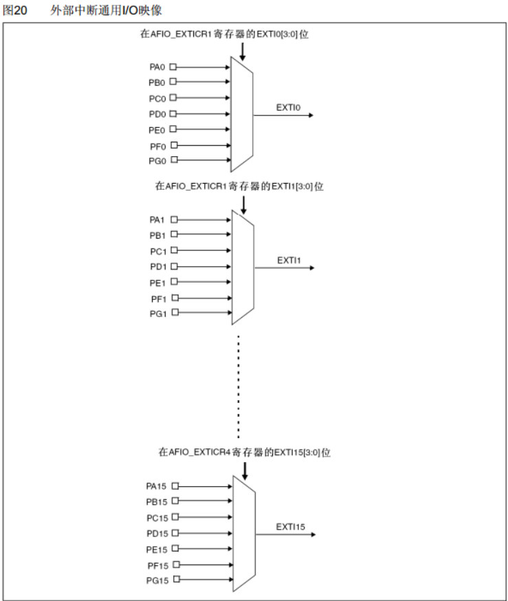
)旋转编码器
用来测量位置、速度或旋转方向的装置，当其旋转轴旋转时，其输出端可以输出与旋转速度和方向对应的方波信号，读取方波信号的频率和相位信息即可得知旋转轴的速度和方向 类型：机械触点式/霍尔传感器式/光栅
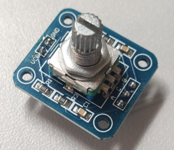
)旋转编码器视图及框架
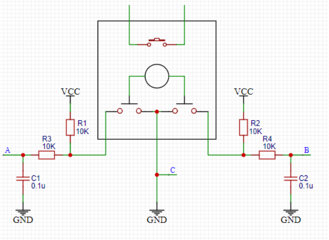
)void GPIO_AFIODeInit(void);//复位AFIO外设，清除其配置
STM32→TIM定时器
定时器通道引脚
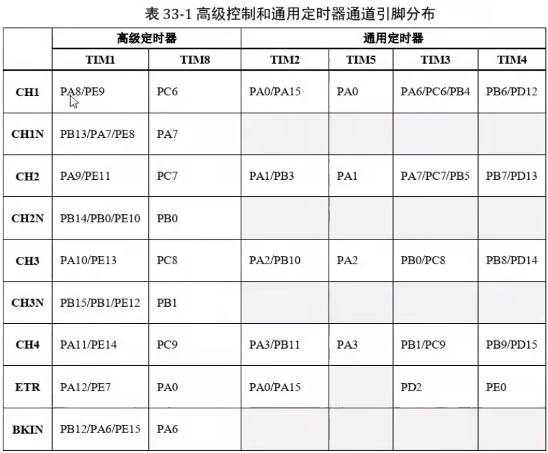
)| 类型 | 编号 | 总线 | 功能 |
|---|---|---|---|
| 高级定时器 | TIM1、TIM8 | APB2 | 拥有通用定时器全部功能，并额外具有重复计数器、死区生成、互补输出、刹车输入等功能 |
| 通用定时器 | TIM2、TIM3、TIM4、TIM5 | APB1 | 拥有基本定时器全部功能，并额外具有内外时钟源选择、输入捕获、输出比较、编码器接口、主从触发模式等功能 |
| 基本定时器 | TIM6、TIM7 | APB1 | 拥有定时中断、主模式触发DAC的功能 |
TIM（Timer）定时器
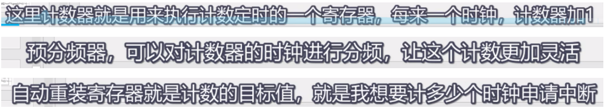
)定时器可以对输入的时钟进行计数，并在计数值达到设定值时触发中断 16位计数器、预分频器、自动重装寄存器的时基单元，在72MHz计数时钟下可以实现最大59.65s的定时 不仅具备基本的定时中断功能，而且还包含内外时钟源选择、输入捕获、输出比较、编码器接口、主从触发模式等多种功能 根据复杂度和应用场景分为了高级定时器、通用定时器、基本定时器三种类型
定时器图示
高级定时器图示
(增加了重复计数寄存器，原先结构每个计数周期结束都会发生更新，这里可以实现每隔几个技术周期发生更新（相当于对输出的更新信号又做了一次分频）)
DTG(Dead Time Generate死区生成电路)（右边的输出引脚由一个变成了两个互补的输出，输出一对互补的PWM波（为了驱动三项无刷电机（三项无刷电机的驱动电路需要三个桥臂，每个桥臂需要两个大功率开关管控制，总共需要六个大功率开关）为了防止互补输出的PWM驱动桥臂时，在开关切换的瞬间，由于器件的不理想，造成短暂的直通现象，所以前面加上死区生成电路，在开关切换的瞬间，产生一定时长的死区，让桥臂的上下管全部关断，防止直通现象））
(增加了刹车输入功能（为了给电机驱动提供安全保障）如果外部引脚BKIN（break in）产生了刹车信号或者内部时钟失效产生故障，那么控制电路就会自动切断电机的输出，防止意外发生)
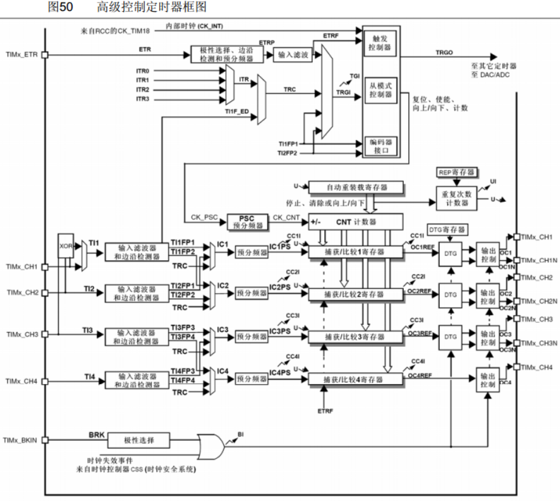
)通用定时器图示（计数器向上计数，向下计数，中央对齐计数模式）
外部时钟模式2：想在ETR外部引脚提供时钟或者对ETR时钟进行计数，把定时器当作定时器用（外部时钟首选）
外部时钟模式1：将TRGI触发输入当作外部时钟输入（通过这一路的外部时钟有1.ETR引脚信号（这一路输入会占用触发输入的通道）2.ITR信号（这一部分时钟信号来自其他定时器）3.CH1引脚的边沿（上升沿下降沿都可）4.CH1引脚和CH2引脚）（通过外部时钟模式1的ITR，TRGO连接方式可以实现定时器的级联）
（外部ETR引脚和TRGI可以提供时钟）（TRGI用作触发输入，可以触发定时器的从模式））（在此处将TRGI触发输入当作外部时钟输入）（主模式的输出TRGO可以通向其他定时器的ITR引脚）（ITR0~ITR3分别来自其他四个定时器的输出，如下表TIM2的ITR0是接在TIM1的TRGO上的，TIM2的ITR1是接在TIM8的TRGO上，以此类推）
| 从定时器 | ITR0 (TS = 000) | ITR1 (TS = 001) | ITR2 (TS = 010) | ITR3 (TS = 011) |
|---|---|---|---|---|
| TIM2 | TIM1 | TIM8 | TIM3 | TIM4 |
| TIM3 | TIM1 | TIM2 | TIM5 | TIM4 |
| TIM4 | TIM1 | TIM2 | TIM3 | TIM8 |
| TIM5 | TIM2 | TIM3 | TIM4 | TIM8 |
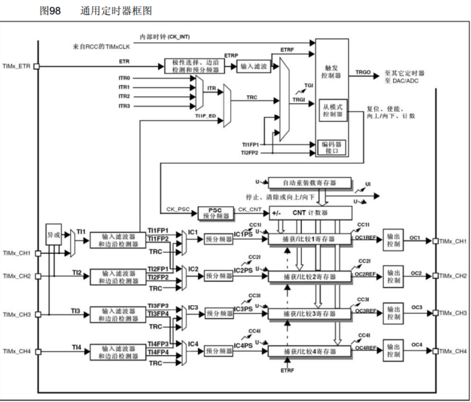 ) |
基本定时器图示（计数器向上计数）
（产生更新中断或者更新事件）（更新事件不会触发中断，但可以触发内部其他电路的工作）
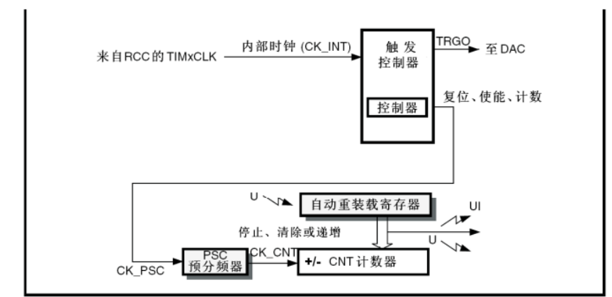
)定时器定时中断流程：
（内部时钟）基准时钟⇒预分频器⇒计数器⇒计数器计数自增，同时不断与自动重装寄存器进行比较⇒它俩值相等时，计时时间到，产生一个更新中断或者更新事⇒CPU响应更新中断，完成定时中断的任务
主从触发模式
（STM32定时器一大特色）它能让内部的硬件在不受程序的控制下实现自动运行
eg:主模式触发DAC：当用DAC输出一段波形时，需要每隔一段时间来触发DAC，让它输出下一个电压点⇒定时器设计了一个主模式，使用这个主模式可以把这个定时器的更新事件映射到这个触发输出TRGO(Trigger Out)的位置，然后TRGO直接接到DAC的触发转换引脚上。
定时中断基本结构
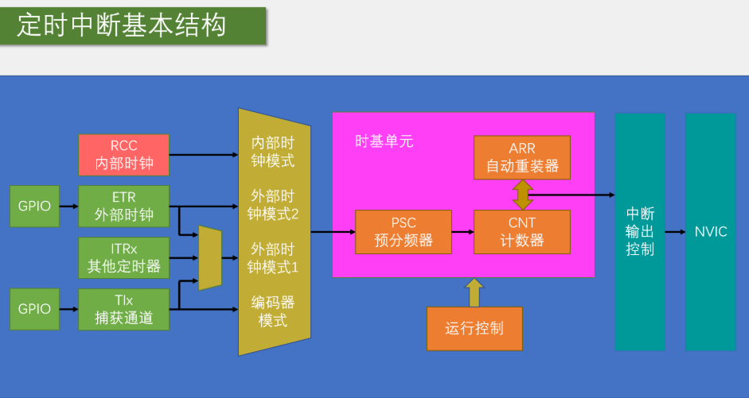
)（中断输出控制就是中断输出的允许位）
时序图
预分频器时序图
CK_PSC:预分频器的输入时钟
CNT_EN:计数器使能（高电平计数器正常运行，低电平计数器停止）
CK_CNT：计数器时钟（预V分频器的时钟输出，计数器的时钟输入）（看图，前半段，计数器未使能，计数器/定时器时钟不运行，使能后，前半段，预分频器系数为1，计数器时钟等于预分频器时钟，后半段，预分频器系数为2，计数器时钟等于预分频器时钟的一半）（预分频器系数=预分频值+1）（在计数器时钟的驱使下，计数器寄存器也跟着时钟的上升沿而不断自增）
计数器计数频率：CK_CNT = CK_PSC / (PSC + 1)
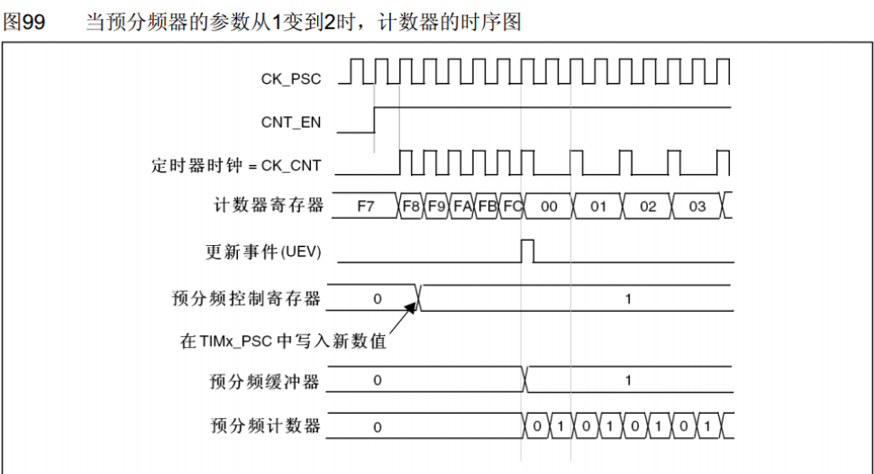
)计数器时序图
CK_INT：内部时钟72MHz
CNT_EN:时钟使能，高电平启动
CK_CNT:计数器时钟/定时器时钟：（eg:频率为CK_CNT/分频系数=36MHz）
更新中断标志位UIF：只要置1了，就回去申请中断，中断响应后，需要手动清零
计数器溢出频率：CK_CNT_OV = CK_CNT / (ARR + 1) = CK_PSC / (PSC + 1) / (ARR + 1)
溢出时间=1/溢出频率
（ARR:自动重装载值）
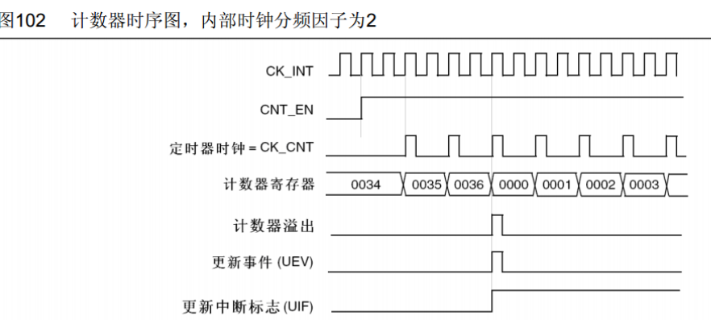
)计数器无预装时序图
（无缓冲寄存器/影子寄存器）
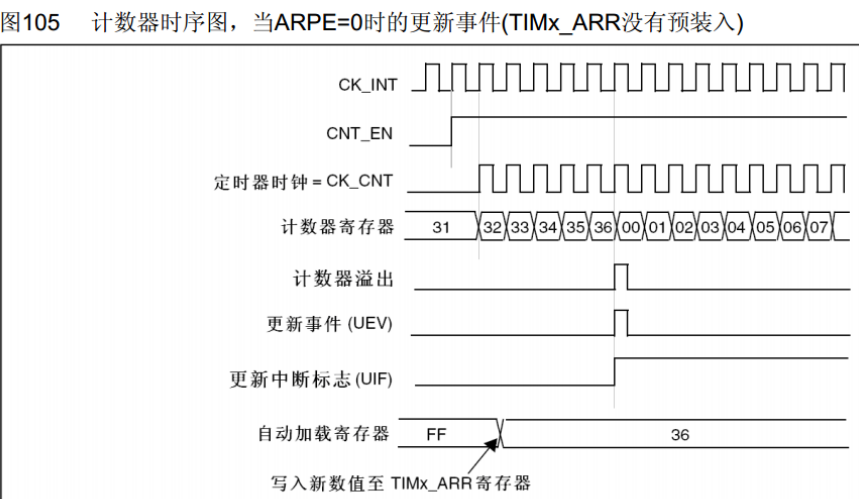
)计数器有预装时序图
（有缓冲寄存器/影子寄存器）
（让值的变化与更新事件同步发生，防止在运行途中更改造成错误）
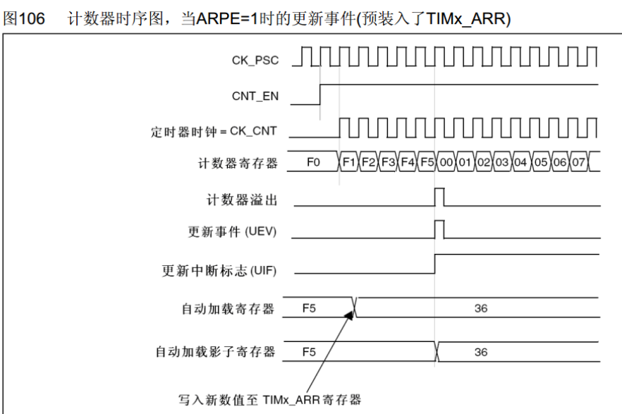
)RCC时钟树
STM32中用来产生和配置时钟，并且把配置好的时钟发送到各个外设的系统（时钟是所有外设运行的基础，是最先需要配置的东西（主函数运行前执行的SystemInit函数就是用来配置RCC时钟树的））
图示左侧都是时钟的产生电路，右侧都是时钟的分配电路(SYSCLK→系统时钟72MHz)(时钟产生电路：四个震荡源：内部的8MHz高速RC振荡器，外部的4-16MHz高速石英晶体振荡器—>晶振（一般8MHzx），外部的32.768KHz低速晶振→给RTC提供时钟，内部40KHz低速RC振荡器→给看门狗提供时钟)（AHB,APB1,APB2的时钟来自这两个高速晶振）
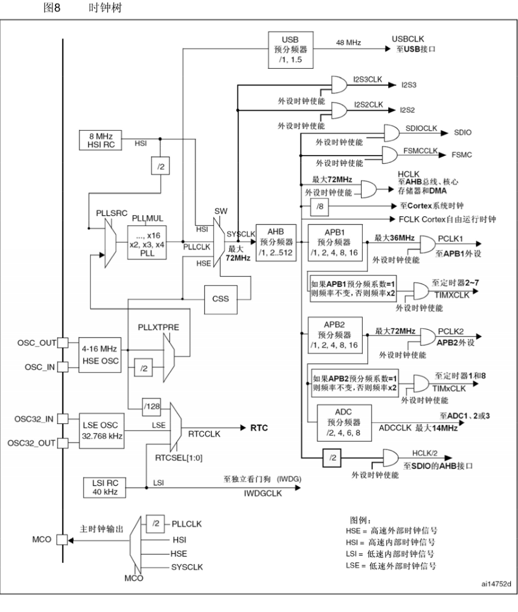
)TIM输出比较
输出比较：OC
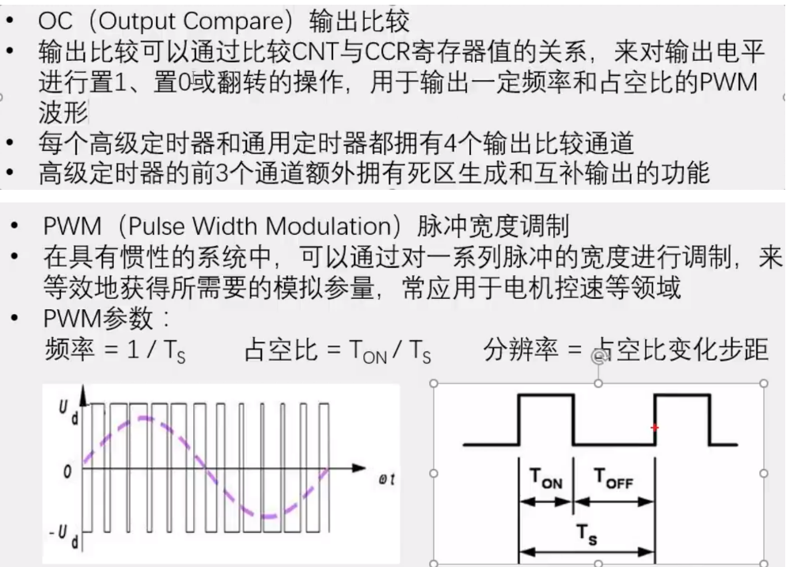
)输出比较八种模式
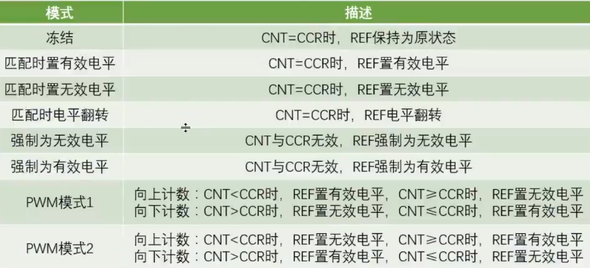
)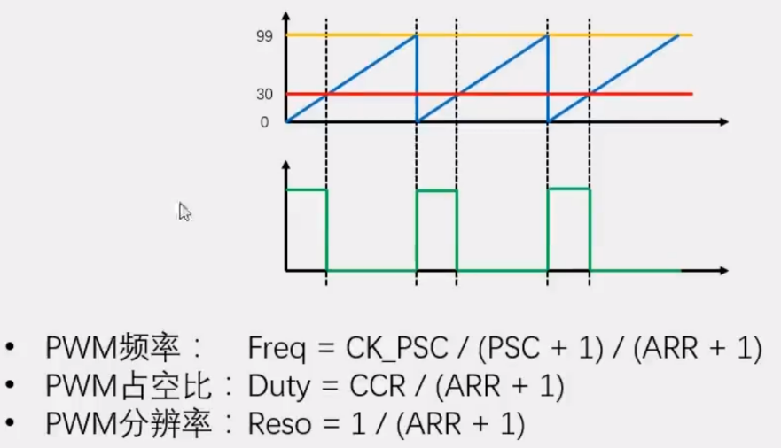
)TIM函数
void TIM_DeInit(TIM_TypeDef* TIMx);//恢复缺省配置
//时基单元
void TIM_TimeBaseInit(TIM_TypeDef* TIMx, TIM_TimeBaseInitTypeDef* TIM_TimeBaseInitStruct);//时基单元初始化（TIMx，结构体（包含配置时基单元的一些参数））
void TIM_TimeBaseStructInit(TIM_TimeBaseInitTypeDef* TIM_TimeBaseInitStruct);//可以把结构体变量赋一个默认值
//运行控制
void TIM_Cmd(TIM_TypeDef* TIMx, FunctionalState NewState);//用来使能计数器
//中断输出控制
void TIM_ITConfig(TIM_TypeDef* TIMx, uint16_t TIM_IT, FunctionalState NewState);//使能中断输出信号（使能外设的中断输出）
//时基单元的时钟源选择部分（RCC内部时钟，ETR外部时钟，ITRx其他定时器，TIx捕获通道）
void TIM_InternalClockConfig(TIM_TypeDef* TIMx);//选择内部时钟（TIMx）
void TIM_ITRxExternalClockConfig(TIM_TypeDef* TIMx, uint16_t TIM_InputTriggerSource);//选择ITRx其他定时器时钟（TIMx,选择要接入的哪个其他定时器）
void TIM_TIxExternalClockConfig(TIM_TypeDef* TIMx, uint16_t TIM_TIxExternalCLKSource, uint16_t TIM_ICPolarity, uint16_t ICFilter);//选择TIX捕获通道的时钟（TIMx，选择TIx具体的某个引脚，输入的极性，输入的滤波器）
void TIM_ETRClockMode1Config(TIM_TypeDef* TIMx, uint16_t TIM_ExtTRGPrescaler, uint16_t TIM_ExtTRGPolarity, uint16_t ExtTRGFilter);//选择ETR通过外部时钟模式1输入的时钟（TIMx，外部触发预分频器，输入极性，输入滤波器）
void TIM_ETRClockMode2Config(TIM_TypeDef* TIMx, uint16_t TIM_ExtTRGPrescaler,uint16_t TIM_ExtTRGPolarity, uint16_t ExtTRGFilter);//选择ETR通过外部时钟模式2输入的时钟（TIMx，外部触发预分频器，输入极性，输入滤波器）
void TIM_ETRConfig(TIM_TypeDef* TIMx, uint16_t TIM_ExtTRGPrescaler, uint16_t TIM_ExtTRGPolarity,uint16_t ExtTRGFilter);//不是用来选择时钟，而是单独用来配置ETR引脚的预分频器，极性，滤波器
//
void TIM_PrescalerConfig(TIM_TypeDef* TIMx, uint16_t Prescaler, uint16_t TIM_PSCReloadMode);//单独写预分频值（要写入的预分频值，写入的模式（听从安排，在更新事件后生效或者在写入后手动产生一个更新事件让值立刻生效））
void TIM_CounterModeConfig(TIM_TypeDef* TIMx, uint16_t TIM_CounterMode);//用来改变计数器的计数模式（TIMx，选择新的计数器模式）
void TIM_ARRPreloadConfig(TIM_TypeDef* TIMx, FunctionalState NewState);//自动重装器预装功能配置（TIMx,使能还是失能->有预装或者无预装）
void TIM_SetCounter(TIM_TypeDef* TIMx, uint16_t Counter);//给计数器手动写入一个值
void TIM_SetAutoreload(TIM_TypeDef* TIMx, uint16_t Autoreload);//给自动重装器手动写入一个值
uint16_t TIM_GetCounter(TIM_TypeDef* TIMx);//获取当前计数器的值
uint16_t TIM_GetPrescaler(TIM_TypeDef* TIMx);//获取当前预分频器的值
//获取标志位和清除标志位
FlagStatus TIM_GetFlagStatus(TIM_TypeDef* TIMx, uint16_t TIM_FLAG);
void TIM_ClearFlag(TIM_TypeDef* TIMx, uint16_t TIM_FLAG);
ITStatus TIM_GetITStatus(TIM_TypeDef* TIMx, uint16_t TIM_IT);
void TIM_ClearITPendingBit(TIM_TypeDef* TIMx, uint16_t TIM_IT);
//以下是输出比较函数
void TIM_OC1Init(TIM_TypeDef* TIMx, TIM_OCInitTypeDef* TIM_OCInitStruct);//（选择定时器，结构体（输出比较的参数））
void TIM_OC2Init(TIM_TypeDef* TIMx, TIM_OCInitTypeDef* TIM_OCInitStruct);
void TIM_OC3Init(TIM_TypeDef* TIMx, TIM_OCInitTypeDef* TIM_OCInitStruct);
void TIM_OC4Init(TIM_TypeDef* TIMx, TIM_OCInitTypeDef* TIM_OCInitStruct);
//（0c:输出比较）（输出比较单元有四个与之一一对应）（选择定时器，结构体（输出比较的参数））
//（结构体来初始化输出比较单元）
void TIM_OCStructInit(TIM_OCInitTypeDef* TIM_OCInitStruct);//用来给输出比较赋一个默认值的
void TIM_ForcedOC1Config(TIM_TypeDef* TIMx, uint16_t TIM_ForcedAction);
void TIM_ForcedOC2Config(TIM_TypeDef* TIMx, uint16_t TIM_ForcedAction);
void TIM_ForcedOC3Config(TIM_TypeDef* TIMx, uint16_t TIM_ForcedAction);
void TIM_ForcedOC4Config(TIM_TypeDef* TIMx, uint16_t TIM_ForcedAction);
//配置强制输出模式（用于在运行过程中暂停输出波形并强制输出高或低电平）（等于设置100%或0%占空比效果类似，所以用的不多）（不掌握）
void TIM_OC1PreloadConfig(TIM_TypeDef* TIMx, uint16_t TIM_OCPreload);
void TIM_OC2PreloadConfig(TIM_TypeDef* TIMx, uint16_t TIM_OCPreload);
void TIM_OC3PreloadConfig(TIM_TypeDef* TIMx, uint16_t TIM_OCPreload);
void TIM_OC4PreloadConfig(TIM_TypeDef* TIMx, uint16_t TIM_OCPreload);
//配置CCR寄存器的预装功能（即影子寄存器，写入的值在更新事件后才生效）（不掌握）
void TIM_OC1FastConfig(TIM_TypeDef* TIMx, uint16_t TIM_OCFast);
void TIM_OC2FastConfig(TIM_TypeDef* TIMx, uint16_t TIM_OCFast);
void TIM_OC3FastConfig(TIM_TypeDef* TIMx, uint16_t TIM_OCFast);
void TIM_OC4FastConfig(TIM_TypeDef* TIMx, uint16_t TIM_OCFast);
//配置快速使能（不掌握）
void TIM_ClearOC1Ref(TIM_TypeDef* TIMx, uint16_t TIM_OCClear);
void TIM_ClearOC2Ref(TIM_TypeDef* TIMx, uint16_t TIM_OCClear);
void TIM_ClearOC3Ref(TIM_TypeDef* TIMx, uint16_t TIM_OCClear);
void TIM_ClearOC4Ref(TIM_TypeDef* TIMx, uint16_t TIM_OCClear);
//外部事件清除REF信号（不掌握）
void TIM_OC1PolarityConfig(TIM_TypeDef* TIMx, uint16_t TIM_OCPolarity);
void TIM_OC1NPolarityConfig(TIM_TypeDef* TIMx, uint16_t TIM_OCNPolarity);
void TIM_OC2PolarityConfig(TIM_TypeDef* TIMx, uint16_t TIM_OCPolarity);
void TIM_OC2NPolarityConfig(TIM_TypeDef* TIMx, uint16_t TIM_OCNPolarity);
void TIM_OC3PolarityConfig(TIM_TypeDef* TIMx, uint16_t TIM_OCPolarity);
void TIM_OC3NPolarityConfig(TIM_TypeDef* TIMx, uint16_t TIM_OCNPolarity);
void TIM_OC4PolarityConfig(TIM_TypeDef* TIMx, uint16_t TIM_OCPolarity);
//单独设置输出比较的极性（不掌握）（带个N的是高级定时器里互补通道的配置）
void TIM_CCxCmd(TIM_TypeDef* TIMx, uint16_t TIM_Channel, uint16_t TIM_CCx);
void TIM_CCxNCmd(TIM_TypeDef* TIMx, uint16_t TIM_Channel, uint16_t TIM_CCxN);
//单独修改输出使能参数的
void TIM_SelectOCxM(TIM_TypeDef* TIMx, uint16_t TIM_Channel, uint16_t TIM_OCMode);
//单独更改输出比较模式的函数
void TIM_SetCompare1(TIM_TypeDef* TIMx, uint16_t Compare1);
void TIM_SetCompare2(TIM_TypeDef* TIMx, uint16_t Compare2);
void TIM_SetCompare3(TIM_TypeDef* TIMx, uint16_t Compare3);
void TIM_SetCompare4(TIM_TypeDef* TIMx, uint16_t Compare4);
//单独更改CCR寄存器值的函数（用于在运行时更改占空比）（比较重要）
void TIM_CtrlPWMOutputs(TIM_TypeDef* TIMx, FunctionalState NewState);
//仅高级定时器使用，在使用高级定时器输出PWM时，需要调用这个函数，使能主输出，否则PWM将不能正常输出
//以上是输出比较函数PWM基本结构
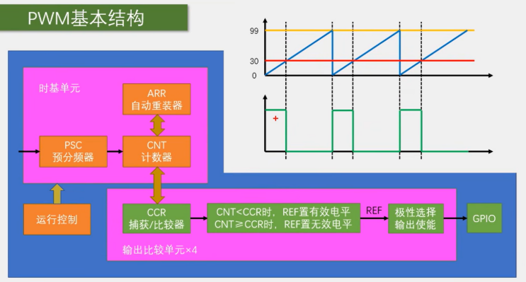
)把模块都打通，就可以输出PWM了
1.RCC开启时钟，把要用的TIM外设和GPIO外设的时钟打开
2.配置时基单元，包括前面的时钟源选择
3.配置输出比较单元，包括CCR的值，输出比较模式，极性选择，输出使能等参数（在库函数里用结构体来配置）
4。配置GPIO，把PWM对应的GPIO口初始化为复用推挽输出
5。运行控制，启动计数器，输出PWM
串口通信
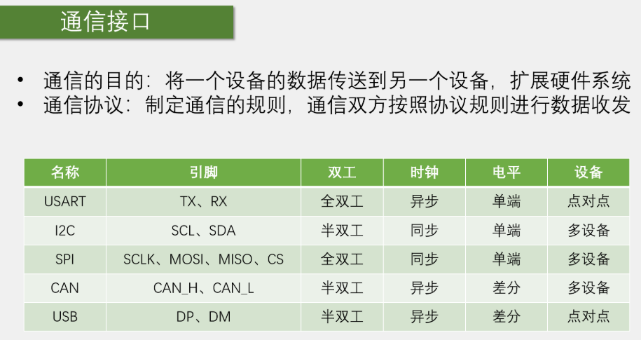
)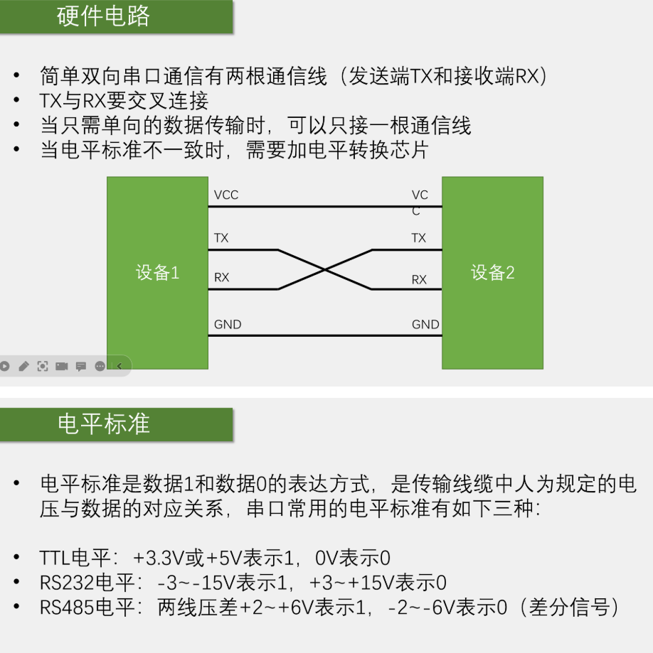
)串口参数
波特率：串口通信的速率 起始位：标志一个数据帧的开始，固定为低电平 数据位：数据帧的有效载荷，1为高电平，0为低电平，低位先行 校验位：用于数据验证，根据数据位计算得来 停止位：用于数据帧间隔，固定为高电平
串口中断
串口内部有两个寄存器：发送数据寄存器（TDR），发送移位寄存器
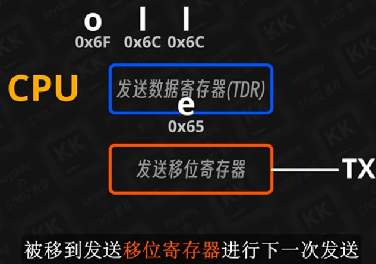
)STM调试
keil 5调试
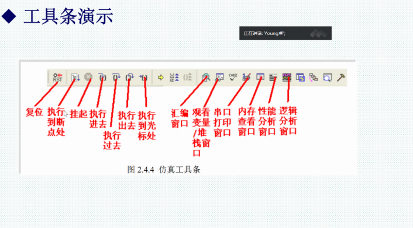
)RTC实现
RTC代码实现所需函数
//复位BKP的值为默认值
void BKP_DeInit(void);
//使能外部晶振，查看时钟树
void RCC_LSEConfig(uint8_t RCC_LSE);
//向指定的用户寄存器吗写入用户程序数据
void BKP_WriteBackupRegister(uint16_t BKP_DR, uint16_t Data);
//从指定的后备寄存器读出数据
uint16_t BKP_ReadBackupRegister(uint16_t BKP_DR);
//在备份域控制寄存器中（RCC_BDCR）里的LSERDY指示LSE晶体震荡是否稳定
FlagStatus RCC_GetFlagStatus(uint8_t RCC_FLAG);
//RTC时钟源选择和时钟使能
void RCC_RTCCLKConfig(uint32_t RCC_RTCCLKSource);
void RCC_RTCCLKCmd(FunctionalState NewState);
//等待RTC的寄存器域RTC的APB时钟同步：等待RTC寄存器（RTC_CNT,RTC_ALR，RTC_PRL）于RTC的APB时钟同步
void RTC_WaitForSynchro(void);
//等待RTC寄存器完成：等待最近一次对RTC的寄存器写操作完成
void RTC_WaitForLastTask(void);
//使能RTC秒中断，产生秒中断
//RTC_RT值包括：RTC_IT_ON(溢出中断使能)，RTC_IT_ALR（闹钟中断使能），RTC_IT_SEC(秒中断使能)
void RTC_ITConfig(uint16_t RTC_IT, FunctionalState NewState);
//进入RTC配置模式
void RTC_EnterConfigMode(void);//允许配置
//推出配置模式
void RTC_ExitConfigMode(void);
//设置RTC预分频的值：预分频配置：PRLH/PRLL
void RTC_SetPrescaler(uint32_t PrescalerValue);
void RTC_ClearFlag(uint16_t RTC_FLAG);//清除复位标志
//获取RTC计数器的值
uint32_t RTC_GetCounter(void);
//设置RTC计数器的值：CNTH/CNTL
void RTC_SetCounter(uint32_t CounterValue);//设置RTC计数器的值
//设置RTC闹钟的值：ALRH/ALRL
void RTC_SetAlarm(uint32_t AlarmValue);
//检查RTC的中断发生与否
ITStatus RTC_GetITStatus(uint16_t RTC_IT);
//清除RTC的中断待处理位
void RTC_ClearITPendingBit(uint16_t RTC_IT);RTC配置流程
使能PWR和BKP时钟
使能后备寄存器访问
配置RTC时钟源，使能RTC时钟
如果使用LSE，要打开LSE
配置RTC预分频器系数
设置时间
开启相关中断（如果需要）
编写中断服务函数
部分操作要等待写操作和完成和同步
I2C
SCL和SDA应该外挂上拉电阻
软件I2C
不用看I2C的库函数，只需要用GPIO的读取函数
软件I2C初始化
- 把SCL和SDA都初始化为开漏输出模式
- 把SCL和SDA都置高电平
//SCL PB10,SDA PB11
//I2C初始化
void MyI2C_Init(void)
{
RCC_APB2PeriphClockCmd(RCC_APB2Periph_GPIOB, ENABLE);
GPIO_InitTypeDef GPIO_InitStructure;
GPIO_InitStructure.GPIO_Mode = GPIO_Mode_Out_OD;//开漏输出 （开漏输出模式仍然可以输入，输入时，先输出1，再直接读取输入数据就行）
GPIO_InitStructure.GPIO_Pin = GPIO_Pin_10|GPIO_Pin_11;
GPIO_InitStructure.GPIO_Speed = GPIO_Speed_50MHz;
GPIO_Init(GPIOB, &GPIO_InitStructure);
GPIO_SetBits(GPIOB, GPIO_Pin_10|GPIO_Pin_11);
}
//调用MyI2C_Init函数PB10,PB11两个端口就被初始化为开漏输出模式，然后释放总线，SCL和SDA处于高电平，此时I2C总线处于空闲状态完成I2C的六个时序基本单元
(所有的单元都会保证以SCL低电平结束)
0，封装
void MyI2C_W_SCL(uint8_t BitValue)
{
GPIO_WriteBit(GPIOB,GPIO_Pin_10,(BitAction)BitValue);
Delay_us(10);
}
void MyI2C_W_SDA(uint8_t BitValue)
{
GPIO_WriteBit(GPIOB,GPIO_Pin_11,(BitAction)BitValue);
Delay_us(10);
}
uint8_t MyI2C_R_SDA(void)
{
uint8_t BitValue;
BitValue=GPIO_ReadInputDataBit(GPIOB,GPIO_Pin_11);
Delay_us(10);
return BitValue;
}1.起始条件
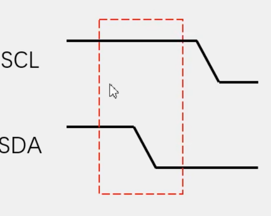
)//首先SCL和SDA都确保释放，然后先拉低SDA,再拉低SCL，就能产生起始条件了
void MyI2C_Start(void)
{
MyI2C_W_SDA(1);
MyI2C_W_SCL(1);
MyI2C_W_SDA(0);
MyI2C_W_SCL(0);
}2.终止条件
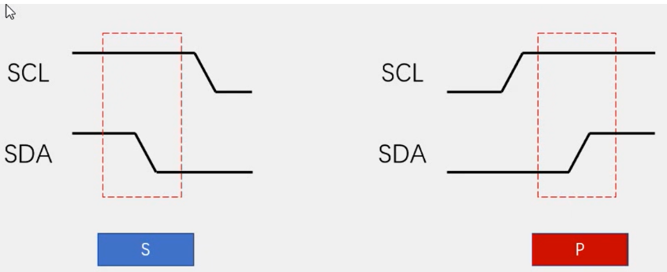
)void MyI2C_Stop(void)
{
MyI2C_W_SDA(0);
MyI2C_W_SCL(1);
MyI2C_W_SDA(1);
}3.发送一个字节
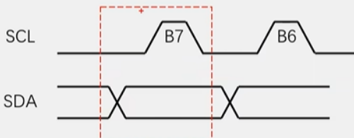
)//SCL低电平变换数据，高电平保持数据稳定（高位先行，先放最高位，再放次高位，等等，最后最低位，依次把一个字节的每一位放在SDA线上，每放完一位后，执行释放SCL，拉低SCL的操作）
//首先趁SCL低电平，先把Byte的最高位放在SDA线上（写SDA,写1还是写0取决于Byte的最高位）
void MyI2C_SendByte(uint8_t Byte)
{
uint8_t i;
for(i=0;i<8;i++)
{
MyI2C_W_SDA(Byte&(0x80>>i));//0x80:1000 0000 ,把Byte的第i位放在SDA线上
MyI2C_W_SCL(1);//释放SCL
MyI2C_W_SCL(0); //拉低SCL
//驱动时钟走一个脉冲
}
}4.接收一个字节
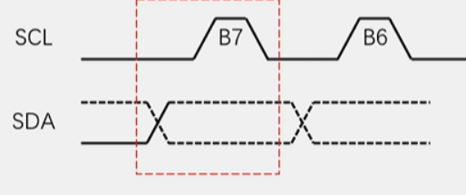
)//接收一个字节时序开始时，SCL低电平，此时从机需要把数据放在SDA上，为了防止主机干扰从机写入数据，主机需要先释放SDA，释放SDA也相当于切换输入模式，在SCL低电平时，从机会把数据放到SDA，如果从机想发1，就释放SDA，如果从机想发0，就拉低SDA，然后主机释放SCL，在SCL高电平期间读取SDA,再拉低SCL，低电平期间，从机会把下一位数据放到SDA上，重复八次，主机就能读到一个字节了（SCL低电平变换数据，高电平读取数据，是一种读写分离的设计，低电平时间定义为写的时间，高电平期间定义为读的时间，如果非要在SCL高电平时变换数据，就变成了起始条件或者终止条件）
uint8_t MyI2C_ReceiveByte(void)
{
uint8_t i, Byte =0x00;
MyI2C_W_SDA(1);
for(i=0;i<8;i++)
{
MyI2C_W_SCL(1);
if(MyI2C_R_SDA()==1)
{Byte |=( MyI2C_W_SCL(1);
if(MyI2C_R_SDA()==1)
{Byte |=0x80;}>>i);}
MyI2C_W_SCL(0);
}
return Byte;
}
5.发送应答，接收应答
（发送一个字节就是发8位，发送应答就是发1位）接收应答（接收一个字节就是收八位，接收应答就是收一位）
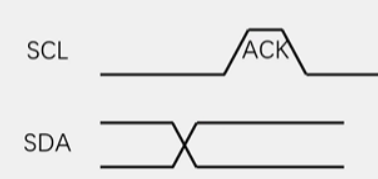
)//发送应答
void MyI2C_SendAck(uint8_t AckBit)
{
MyI2C_W_SDA(AckBit);//主机把AckBit放在SDA上
MyI2C_W_SCL(1);//释放SCL，SCL高电平，从机读取应答，SCL低电平，进入下一个时序单元
MyI2C_W_SCL(0); //拉低SCL
//驱动时钟走一个脉冲
}//接收应答 读到0，代表从机给了应答，读到1，代表从机没给应答
uint8_t MyI2C_ReceiveAck(void)
{//函数进来时，SCL低电平，
uint8_t AckBit;
MyI2C_W_SDA(1);//主机释放SDA，防止干扰从机，同时，从机把应答位放在SDA上
MyI2C_W_SCL(1);//SCL高电平
AckBit=MyI2C_R_SDA();//主机读取应答位
MyI2C_W_SCL(0); //SCL低电平，进入下一个时序单元
//I2C的引脚都是开漏输出+弱上拉的配置，主机输出1，并不是强制SDA为高电平，而是释放SDA
//I2C是在进行通信，主机释放SDA，从机会对SDA操作，即使之前主机把SDA置1，之后再读取SDA，读到的值也可能是0
}软件I2C读取MPU6050
MPU读写字节封装
#define MPU6050_ADDRESS 0xD0
void MPU6050_WriteReg(uint8_t RegAddress,uint8_t Data)//实现指定地址写单个字节（多个字节用for循环）
{
MyI2C_Start();//起始时序
MyI2C_SendByte(MPU6050_ADDRESS);//发送一个字节 0xD0:从机地址+读写位
MyI2C_ReceiveAck();//接收应答 返回一个值：应答位
//这里有应答位可以判断从机有没有接收到数据
//寻址找到从机之后，就可以发送下一个字节了
MyI2C_SendByte(RegAddress);//第二个字节的内容，就是指定寄存器地址，这个字节会存在MPU6050的当前地址指针里面，用于指定具体读写哪个寄存器
//发送一个字节后，也得接收一下应答
MyI2C_ReceiveAck();
MyI2C_SendByte(Data);//第三个字节，就是我要写入指定寄存器地址下的数据了
MyI2C_ReceiveAck(); //接收应答
MyI2C_Stop();//终止这个时序
}
uint8_t MPU6050_ReadReg(uint8_t RegAddress)//实现指定地址读单个字节，参数是指定读的地址
{
uint8_T Data;
MyI2C_Start();//起始时序
MyI2C_SendByte(MPU6050_ADDRESS);//发送一个字节 0xD0:从机地址+读写位
MyI2C_ReceiveAck();//接收应答 返回一个值：应答位
//这里有应答位可以判断从机有没有接收到数据
//寻址找到从机之后，就可以发送下一个字节了
MyI2C_SendByte(RegAddress);//第二个字节的内容，就是指定寄存器地址，这个字节会存在MPU6050的当前地址指针里面，用于指定具体读读哪个寄存器
//发送一个字节后，也得接收一下应答
MyI2C_ReceiveAck();
//指定地址就是设定了MPU6050的当前地址指针，设定完地址之后，我们要转入读的时序，必须重新指定读写位，必须重新起始
MyI2C_Start();//起始时序
MyI2C_SendByte(MPU6050_ADDRESS|0x01);//指定从机地址和读写位，从机地址仍然是MPU6050的地址，但是是写地址，读写位是1
MyI2C_ReceiveAck(); //接收应答
//总线控制权正式交给从机
//从机开始发送一个字节，主机就是调用->
Data=MyI2C_ReceiveByte()//接收一个字节，这个函数的返回值就是接收到的数据
//主机接收一个字节后，要给从机发送一个应答
MyI2C_SendAck(1);//0给从机应答 1不给从机应答（不想继续读了就不给应答，主机收回总线的控制权），这里只读一个数据
MyI2C_Stop();//终止时序
return Data;//把读到的数据返回回去，想读多个字节就用for循环（读取最后一个字节给非应答）
}
MPU初始化，获取数据封装
//读寄存器
{
OLED_Init();
MPU6050_Init();
//调用读写寄存器的地址
uint8_t ID = MPU6050_ReadReg(0x75);//参数是要读的寄存器地址,返回值是ID号的内容
OLED_ShowHexNum(1,1,ID,2);
}
//写寄存器，首先需要解除芯片的睡眠模式，否则写入无效
//睡眠模式是电源管理寄存器1的这一位SLEEP,直接将这个寄存器写入0x00,这样就能解除睡眠模式了
{
OLED_Init();
MPU6050_Init();
//调用读写寄存器的地址
MPU6050_WriteReg(0x6B,0x00);//0x6B:电源管理寄存器地址，往内写入0x00,解除睡眠模式
//采样率分频寄存器，地址是0x19，值的内容是采样分频
MPU6050_WriteReg(0x19,0xAA);//往其中写入0xAA
uint8_t ID = MPU6050_ReadReg(0x19);//参数是要读的寄存器地址,返回值是ID号的内容
OLED_ShowHexNum(1,1,ID,2);
}
void MPU6050_Init(void)
{
MyI2C_Init(); //开启I2C通信
MPU6050_WriteReg(0x6B,0x01);//配置电源管理寄存器1
//设备复位，给0->不复位 睡眠模式，给0->解除睡眠
//循环模式，给0->不需要循环 无关位，给0即可
//温度传感器失能，给0->不失能，最后3位选择时钟，给000->给内部时钟，给001->选x轴的陀螺仪时钟
//总：0000 0001：0x01
MPU6050_WriteReg(0x6C,0x00);//配置电源管理寄存器2
//前两位：循环模式唤醒频率，给00->不需要
//后六位：每个轴的待机位，全都给0->不需要待机
//总：0000 0000：0x00
MPU6050_WriteReg(0x19,0x09);//配置采样率分频寄存器
//这八位决定了数据输出的快慢，值越小越快
//总：0x09:10分频
MPU6050_WriteReg(0x1A,0x06);//"配置寄存器"
//外部同步，Bit5,Bit4,Bit3全部给0->不需要
//数字低通滤波器 Bit2,Bit1,Bit0给个110->最平滑的滤波
//总 ：0000 0110 ：0x06
MPU6050_WriteReg(0x1B,0x18);//陀螺仪配置寄存器
//Bit7,Bit6,Bit5自测使能 都给0->不自测
//Bit4,Bit3满量程选择 给11->选择最大量程
//Bit2,Bit1,Bit0 无关位给000
//总：0001 1000：0x18
MPU6050_WriteReg(0x1C,0x18); //加速度计配置寄存器
//Bit7,Bit6,Bit5自测使能 都给0->不自测
//Bit4,Bit3满量程选择 给11->选择最大量程
//高通滤波器 Bit2,Bit1,Bit0给个000->用不到
//总：0001 1000：0x18
//总：解除睡眠，选择陀螺仪时钟，六个轴均不待机采样分频为10，滤波参数给最大陀螺仪和加速度计都选择最大量程
//配置完之后，陀螺仪内部就在不断地进行数据转换了，输出的数据就存放在就存放在数据寄存器里，想获取数据的话，只需要再写一个获取数据寄存器的函数即可
}
void MPU6050_GetData(int16_t *AccX,int16_t *AccY，int16_t *AccZ,int16_t *GyroX,int16_t *GyroY，int16_t *GyroZ)//这个函数需要返回6个int16_t的数据，分别表示XYZ轴的加速度值和陀螺仪值
{
uint8_t Data_H,Data_L;
Data_H=MPU6050_ReadReg(0x3B);//首先读取加速度寄存器X轴的高8位
Data_L=MPU6050_ReadReg(0x3C);//再读取加速度寄存器的低8位
*AccX=(Data_H<<8)|Data_L;//高八位左移八位再或上低八位就是加速度计X轴的16位数据
Data_H=MPU6050_ReadReg(0x3D);//首先读取加速度寄存器Y轴的高8位
Data_L=MPU6050_ReadReg(0x3E);//再读取加速度寄存器的低8位
*AccY=(Data_H<<8)|Data_L;//高八位左移八位再或上低八位就是加速度计Y轴的16位数据
Data_H=MPU6050_ReadReg(0x3F);//首先读取加速度寄存器Z轴的高8位
Data_L=MPU6050_ReadReg(0x40);//再读取加速度寄存器的低8位
*AccZ=(Data_H<<8)|Data_L;//高八位左移八位再或上低八位就是加速度计Z轴的16位数据
Data_H=MPU6050_ReadReg(0x43);//首先读取陀螺仪寄存器X轴的高8位
Data_L=MPU6050_ReadReg(0x44);//再读取陀螺仪寄存器的低8位
*AccX=(Data_H<<8)|Data_L;//高八位左移八位再或上低八位就是陀螺仪计X轴的16位数据
Data_H=MPU6050_ReadReg(0x45);//首先读取陀螺仪寄存器Y轴的高8位
Data_L=MPU6050_ReadReg(0x46);//再读取陀螺仪寄存器的低8位
*AccY=(Data_H<<8)|Data_L;//高八位左移八位再或上低八位就是陀螺仪Y轴的16位数据
Data_H=MPU6050_ReadReg(0x47);//首先读取陀螺仪寄存器Z轴的高8位
Data_L=MPU6050_ReadReg(0x48);//再读取陀螺仪寄存器的低8位
*AccZ=(Data_H<<8)|Data_L;//高八位左移八位再或上低八位就是陀螺仪Z轴的16位数据
}
I2C通信外设
（同步时序）（硬件I2C）
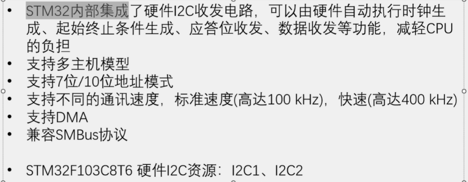
)由硬件电路自动反转引脚电平
软件只需要写入控制寄存器CR（踩油门，打方向盘）,数据寄存器DR（看仪表盘），就可以实现协议了。
为了实时监控时序的状态，软件还得读取状态寄存器SR（观看仪表盘，了解汽车的运行状态）
掌握一主多从，7位地址的I2C（起始条件之后，紧跟的一个字节必须是7位地址+读写位）
主机：拥有主动控制总线的权利。从机：只能在主机允许的情况下，才能控制总线
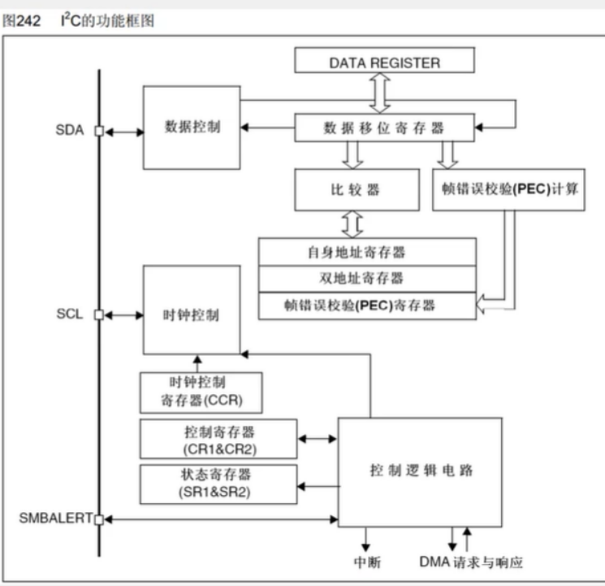
)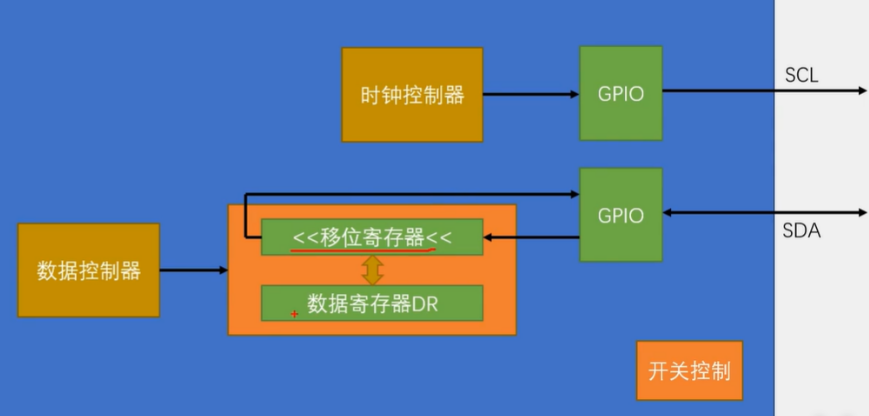
)I2C是高位先行，在发送的时候，最高位先移出去 ，然后是次高位
移位8次，就能发送一个字节
在接收的时候，数据通过GPIO口从右边依次移进来，移8次，一个字节就接收完成了
配置硬件I2C时，两个GPIO口都要配置成复用开漏输出的模式（复用：GPIO口的状态是交由片上外设来控制的。开漏输出：是I2C协议要求的端口配置（即使是开漏输出模式，GPIO口也是可以进行输入的））
主机发送
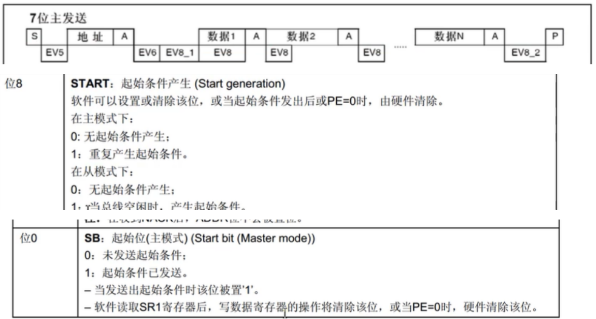
)主机接收
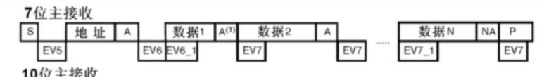
)起始，从机地址+读，接收应答 接收数据，发送应答 接收数据，发送应答 ，最后一个数据给非应答，之后终止（这个时序是当前地址读的时序，指定地址读的复合格式这里没有给，需要我们自己组合一下）
硬件I2C读取MPU6050
-
开启I2C外设和对应GPIO口的时钟
-
把I2C外设对应的GPIO口初始化为复用开漏模式
-
使用结构体，对整个I2C进行配置
-
I2C_Cmd 使能I2C
硬件I2C函数
void I2C_GenerateSTART(I2C_TypeDef* I2Cx, FunctionalState NewState);//生成起始条件，调用下这个函数，就可以生辰起始条件了
void I2C_GenerateSTOP(I2C_TypeDef* I2Cx, FunctionalState NewState);//调用一下，生成终止条件
void I2C_AcknowledgeConfig(I2C_TypeDef* I2Cx, FunctionalState NewState);//配置CR1的Ack这一位，这里Ack就是应答使能（STM32作为主机，在接收一个字节后，是给从机应答，还是非应答，取决于此，Ack是1，就是给从机应答，0就是给从机非应答）
void I2C_SendData(I2C_TypeDef* I2Cx, uint8_t Data);//发送数据，就是把Data这个数据直接写入到DR寄存器（数据寄存器，用于存放接收到的数据或放置用于发送到总线的数据）
uint8_t I2C_ReceiveData(I2C_TypeDef* I2Cx);//读取DR的数据作为返回值(在接收器模式下，接收到的字节被拷贝到DR寄存器)（读取DR，接收数据）
void I2C_Send7bitAddress(I2C_TypeDef* I2Cx, uint8_t Address, uint8_t I2C_Direction);//发送七位地址的专用函数
硬件I2C初始化
void MPU6050_Init(void)
{
//1开启I2C外设和对应GPIO口的时钟
RCC_APB1PeriphClockCmd(RCC_APB1Periph_I2C2,ENABLE);
RCC_APB2PeriphClockCmd(RCC_APB2Periph_GPIOB,ENABLE);
//2
GPIO_InitTypeDef GPIO_InitStruct;//定义GPIO_InitStruct结构体
GPIO_InitStruct.GPIO_Mode= GPIO_Mode_AF_OD;//结构体初始化—>复用开漏输出
GPIO_InitStruct.GPIO_Pin=GPIO_Pin_10|GPIO_Pin_11;//结构体初始化—>
GPIO_InitStruct.GPIO_Speed=GPIO_Speed_50MHz;//结构体初始化->速度
GPIO_Init(GPIOB,&GPIO_InitStruct);//GPIOA初始化
//3初始化I2C外设
I2C_InitTypeDef I2C_InitStructure;
I2C_InitTypeDef I2C_InitStructure;
I2C_InitStructure.I2C_Ack=I2C_Ack_Enable;//应答位配置，配置Ack位，用于确定在接收一个字节后是否给从机应答,之后要更改再用单独的函数更改
I2C_InitStructure.I2C_AcknowledgedAddress=I2C_AcknowledgedAddress_7bit;//指定STM32作为从机,可以响应几位的地址(可以响应10位或者7位的地址)
I2C_InitStructure.I2C_ClockSpeed=50000;//50KHz时钟速度，配置SCL的时钟频率,数值越大，SCL频率越高，数据传输就越快。0~100KHz标准速度，100KHz~400KHz：快速状态
I2C_InitStructure.I2C_DutyCycle=I2C_DutyCycle_2;//时钟占空比，只用在时钟频率大于100KHz，也就是进入到快速状态时才有用,在0~100KHz的标准速度下，占空比是固定的1:1(低电平时间:高电平时间=1:1)
//时钟占空比是低:高，是为了快速模式而设定的（读取速度大于写入速度）（所以给低电平的写入时间多分配点资源）
I2C_InitStructure.I2C_Mode=I2C_Mode_I2C;//模式
I2C_InitStructure.I2C_OwnAddress1=0x00;//自身地址1，STM32作为从机使用，用于指定STM32的自身地址，方便别的主机呼叫它（如果上面的参数选择了响应7位地址，这里就得给STM32指定一个自身的7位地址）
I2C_Init(I2C2,&I2C_InitStructure);
//4:I2C2使能
I2C_Cmd(I2C2,ENABLE);
}
硬件I2C封装函数
写寄存器，指定地址写一个字节的时序
void MPU6050_WriteReg(uint8_t RegAddress,uint8_t Data)
{
//1.生成起始条件
I2C_GenerateSTART(I2C2,ENABLE);
//硬件I2C是非阻塞式的程序，在函数结束之后，都要等待相应的标志位，来确保这个函数的操作执行到位了
//此时要等待EV5事件的到来，检查EV5事件
//用到状态监控函数
while(I2C_CheckEvent(I2C2,I2C_EVENT_MASTER_MODE_SELECT)!=SUCESS);//监测EV5事件是否发生：主机模式选择(因为STM32默认位主机，发送起始条件之后变为主机)，EV5事件也可以叫做主机模式已选择事件，，，返回值：SUCCESS表示最后一次事件等于我们指定的事件 ERROR表示指定事件未发生
//为了等待EV5事件发生，所以套while循环
//2.发送从机地址，接收应答
//发送从机地址，就是发送一个字节，直接向DR寄存器写入一个字节就行
I2C_Send7bitAddress(I2C2,MPU6050_ADDRESS,I2C_Direction_Transmitter);//第二个参数是从机地址,采用宏定义地址，第三个参数是方向，也就是从机地址的最低为->读写位。第三个参数：Transmitter,发送，给地址的最低位清0，Receiver,接收，它就给你的地址最低位置1
while(I2C_CheckEvent(I2C2,I2C_EVENT_MASTER_RECEIVER_MODE_SELECTED)!=SUCESS);//“接收模式已选择”等待EV6事件发生
I2C_SendData(I2C2,RegAddress);//第二个参数是一个字节的数据,宏定义
while(I2C_CheckEvent(I2C2,I2C_EVENT_MASTER_BYTE_TRANSMITTING)!=SUCESS);//等待EV8事件"字节正在发送"
I2C_SendData(I2C2,Data);
while(I2C_CheckEvent(I2C2,I2C_EVENT_MASTER_BYTE_TRANSMITTED)!=SUCESS);//等待EV8_2事件"事件已经发送完毕"，移位完成了并且没有新的数据可以发的时候置BTF
I2C_GenerateSTOP(I2C2,ENABLE);//生成终止条件
}
读寄存器的函数，指定地址读寄存器
uint8_t MPU6050_ReadReg(uint8_t RegAddress)
{
uint8_t Data;
//1.生成起始条件
I2C_GenerateSTART(I2C2,ENABLE);
//硬件I2C是非阻塞式的程序，在函数结束之后，都要等待相应的标志位，来确保这个函数的操作执行到位了
//此时要等待EV5事件的到来，检查EV5事件
//用到状态监控函数
while(I2C_CheckEvent(I2C2,I2C_EVENT_MASTER_MODE_SELECT)!=SUCESS);//监测EV5事件是否发生：主机模式选择(因为STM32默认位主机，发送起始条件之后变为主机)，EV5事件也可以叫做主机模式已选择事件，，，返回值：SUCCESS表示最后一次事件等于我们指定的事件 ERROR表示指定事件未发生
//为了等待EV5事件发生，所以套while循环
//2.发送从机地址，接收应答
//发送从机地址，就是发送一个字节，直接向DR寄存器写入一个字节就行
I2C_Send7bitAddress(I2C2,MPU6050_ADDRESS,I2C_Direction_Transmitter);//第二个参数是从机地址,采用宏定义地址，第三个参数是方向，也就是从机地址的最低为->读写位。第三个参数：Transmitter,发送，给地址的最低位清0，Receiver,接收，它就给你的地址最低位置1
while(I2C_CheckEvent(I2C2,I2C_EVENT_MASTER_RECEIVER_MODE_SELECTED)!=SUCESS);//“接收模式已选择”等待EV6事件发生
I2C_SendData(I2C2,RegAddress);//第二个参数是一个字节的数据,宏定义
while(I2C_CheckEvent(I2C2,I2C_EVENT_MASTER_BYTE_TRANSMITTING)!=SUCESS);//等待EV8事件"字节正在发送"
}
状态机
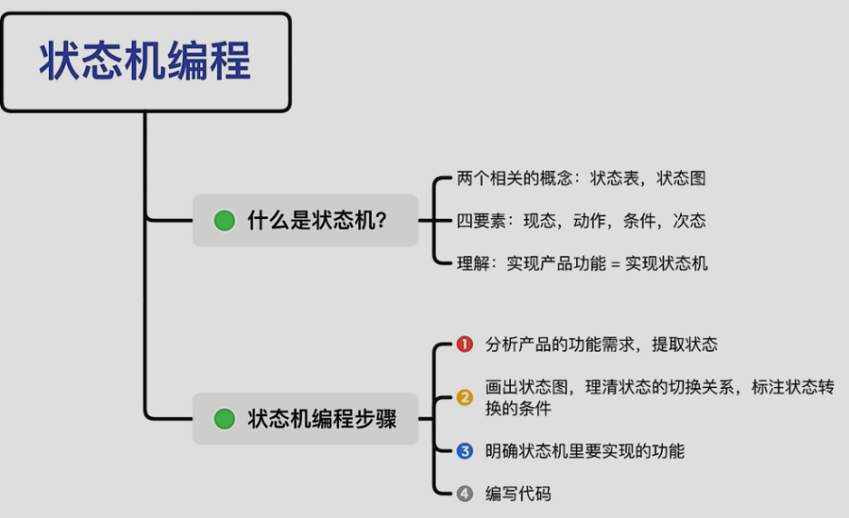
)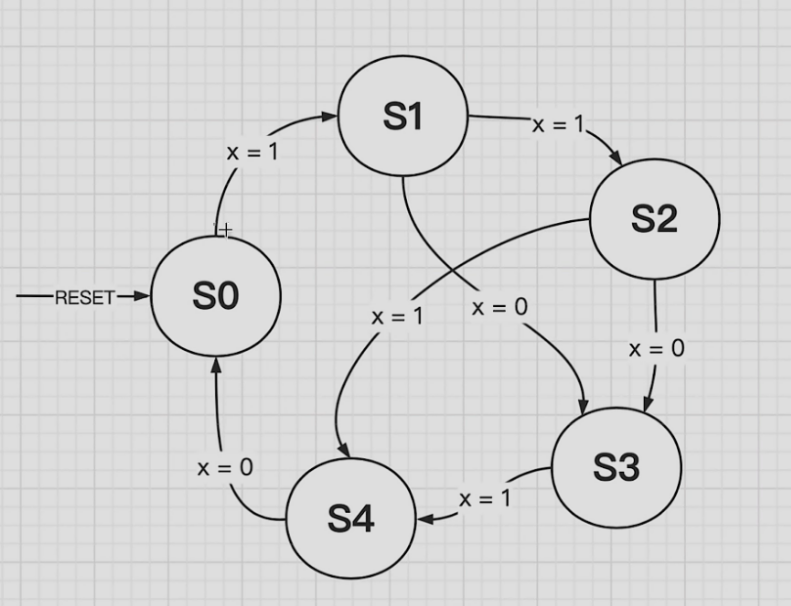
) 举例：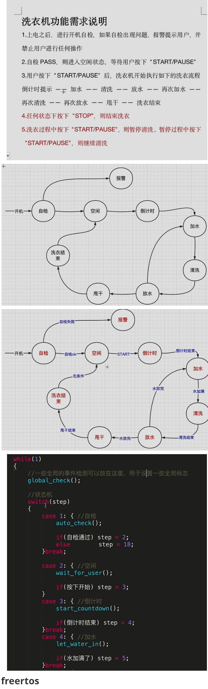
)freertos
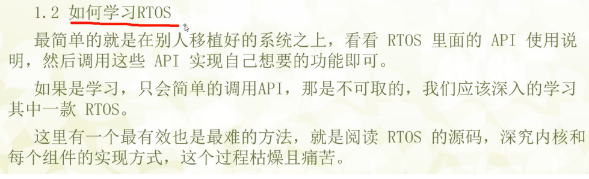
)实时操作系统(允许多任务同时运行)：freertos,ucos,rt-thread
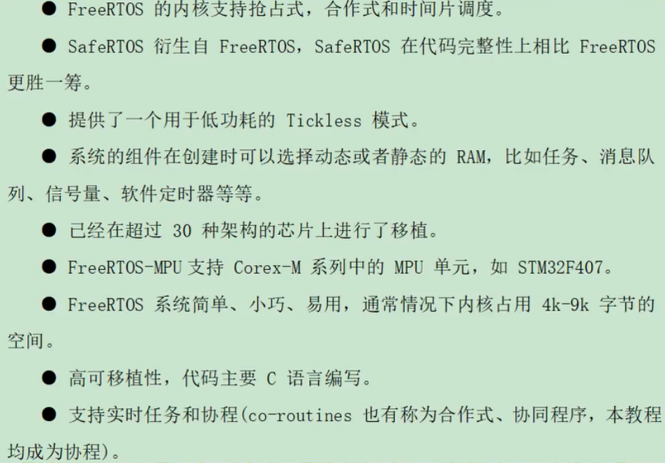
)Freerots编程风格
)
（int从不使用）（short是16位，long是32位） )
任务创建
独立的无法返回的函数是函数 )
任务栈
栈是单片机在ram中一段连续的空间
为每个任务分独立的栈的内存空间 )
任务函数 )
任务控制块 ) 列表和列表项（C语言当中的链表）：用于跟踪任务 )
1和5用于检查完整性
2用于记录列表项数量
3用于记录列表当前索引项
4记录最后一个列表项 ) 3→下一个成员
4→前一个成员
6→指向就绪列表
迷你列表项（有些情况不需要列表项这么全的功能） )
1.值
2.指向下一个
3.指向上一个
列表初始化 )
列表项初始化 ) 列表项插入函数)
函数的具体实现过程)
任务创建函数 )
任务就绪列表 ) )
调度器：实现任务切换 )
任务切换 )
总：任务创建→启动→就绪列表→任务调度→任务切换→
任务创建实践过程
)
1.初始化硬件
2.创建开始任务（创建任务所需堆栈大小，任务控制块，任务函数）
3.启动任务调度器
main此时就完成了（函数要继续执行下去就从开始任务（开始任务有指定的任务函数）（在开始任务函数这里创建其他的任务子函数）这里）(创建完之后再删除开始任务)
上位机和下位机
上位机： 上位机指可以直接发送操作指令的计算机或单片机，一般提供用户操作交互界面并向用户展示反馈数据。 典型设备类型：电脑，手机，平板，面板，触摸屏
下位机： 下位机指直接与机器相连接的计算机或单片机，一般用于接收和反馈上位机的指令，并且根据指令控制机器执行动作以及从机器传感器读取数据。 典型设备类型：PLC，STM32，51，FPGA，ARM等各类可编程芯片
上位机软件： 用于完成上位机操作交互的软件被定义为“上位机软件”；
- 上位机给下位机发送控制命令，下位机收到此命令并执行相应的动作。
- 上位机给下位机发送状态获取命令，下位机收到此命令后调用传感器测量，然后转化为数字信息反馈给上位机。
- 下位机主动发送状态信息或报警信息给上位机。
为了实现以上过程，上位机和下位机都需要单独编程，都需要专门的开发人员在各自两个平台编写代码。
上位机与下位机关系示意图：